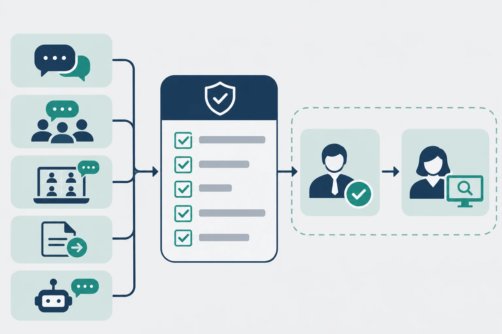

Article · 飞函
Article · 飞函
消息审计覆盖到哪里，谁来定查询规则？
项目出现交付争议时，负责人可能需要还原群里的任务安排；员工提出投诉时，调查人员可能需要核对一段私聊。两类查询都涉及沟通记录，但目的、可查看的人和可使用的内容并不相同。如果只说“平台支持消息审计”，真正需要查询时仍可能答不清：哪些记录在范围内，谁能申请，查到的内容可以交给谁。
先把“沟通范围”逐项说清
企业可以从实际工作入口列一张清单：一对一聊天、工作群、跨部门群、机器人推送、会议聊天、文件发送及其后续流转。对每一项，再核对是否纳入审计、能查到什么、记录保存多久，以及人员离职或群解散后如何处理。
这里尤其要区分消息记录与围绕消息发生的其他活动。群里发过一个文件，不等于审计记录一定包含文件内容、后续下载或转发；会议通知出现在聊天中，也不等于会议中的语音和共享画面都可查询。具体覆盖范围应以所用产品版本、部署方式和实际配置核验，不能凭“消息审计”四个字推断。

这张清单最好由业务部门和平台管理员一起确认。业务部门知道沟通在哪里发生，管理员能核对系统实际记录了什么。两边对齐后，企业才能发现关键流程是否存在记录空白，也能避免把员工原本不在审计范围内的沟通误认为随时可查。
查询规则由谁定
查询规则不宜交给单个管理员自行决定。业务负责人提出明确的使用场景，例如核对项目交接、处理客户争议或调查内部投诉；法务、合规或个人信息保护相关岗位审视查询目的、范围和保存期限；信息安全团队设计权限与留痕要求；平台管理员按批准的规则配置和执行。涉及敏感调查时，还应指定独立审批人，避免申请人同时决定范围并调取记录。
一条可执行的规则至少回答五个问题：因何查询、查谁和哪段时间、由谁批准、谁实际查看、结果如何使用与销毁。例如，核对某次项目交接，可以先限定项目群和交接时间段；如果初次结果不足，再说明理由扩大范围。查询结果只交给承担该事项的人员，并记录申请、审批、操作与交付过程。这样既能支持追溯，也能约束无关浏览。
让产品能力服从治理边界
飞函官方产品资料列有消息审计，以及按部门、角色、人员分配权限等安全管控能力。企业可据此评估审计与权限管理如何承接自身规则，但具体可查询的消息类型、操作方式和适用版本，仍需在选定部署方案中逐项确认。审批分工、使用目的和结果处置，也需要由企业自行制定并落实。
落地时，可以先选一个真实场景走通全程：提交申请、核定范围、批准查询、执行操作、交付结果、关闭事项。演练中若发现“谁都能查”或“查到后无人负责”，应先收紧流程，再扩大审计覆盖。消息审计的价值，最终取决于记录范围清楚、查询有理由、使用有边界。